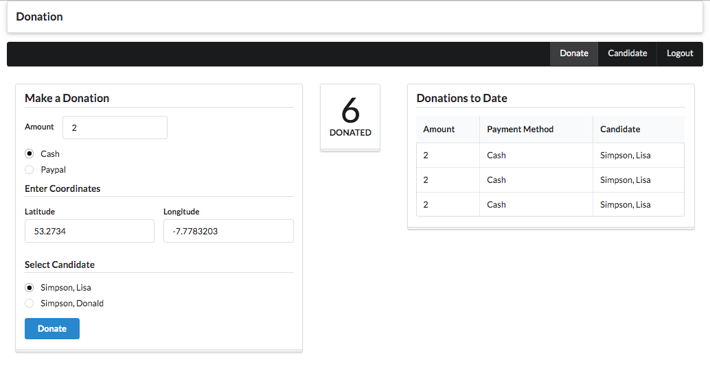
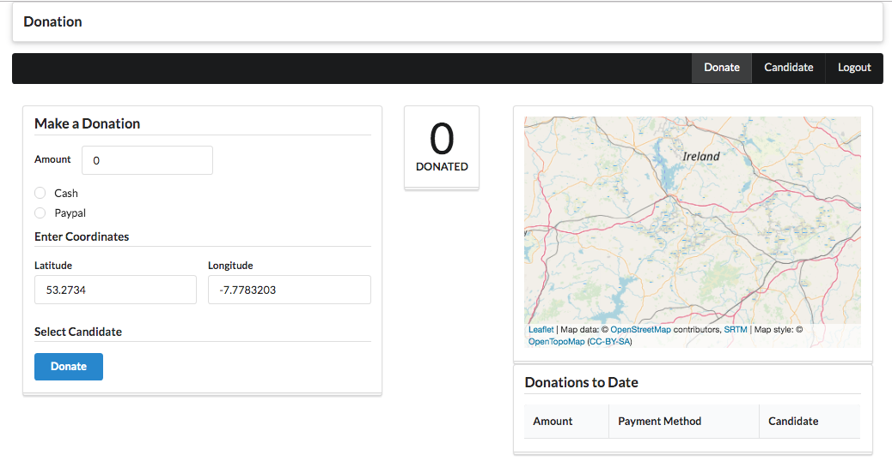
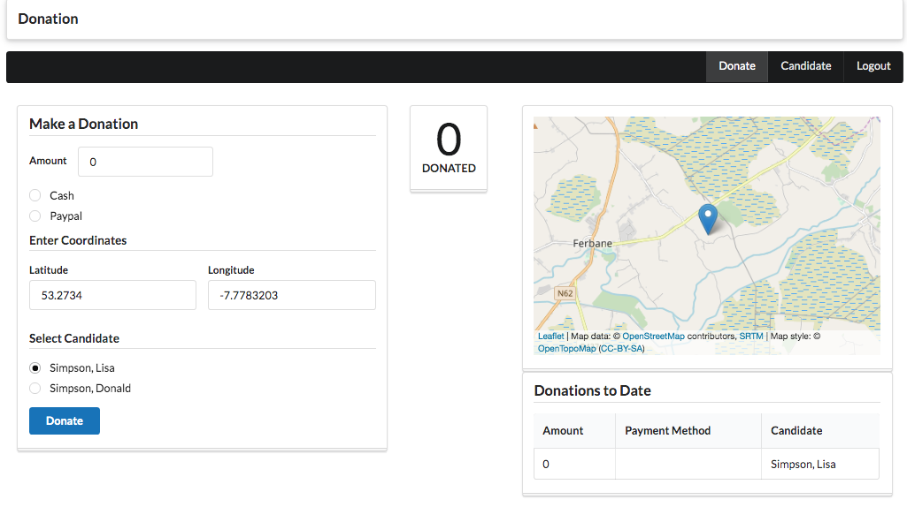
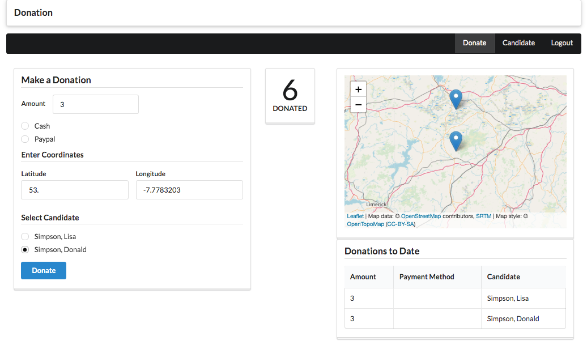
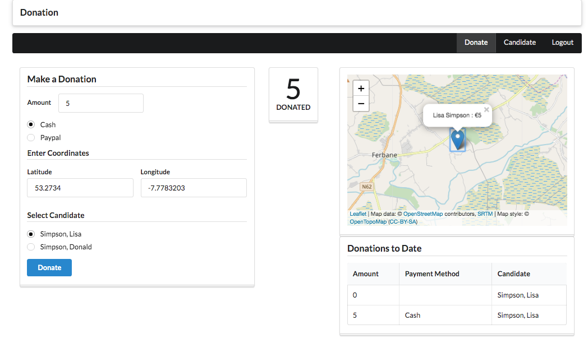

Incorporate a map into the donations view, showing location of latest donation.
We can start by introducing a representation of locations in individual donation:
export interface Location {
lat: number;
lng: number;
}
export interface Donation {
amount: number;
method: string;
candidate: Candidate;
location: Location;
}This custom element can the be used to allow a lat/lng pair to be entered:
<template>
<h4 class="ui dividing header"> Enter Coordinates </h4>
<div class="two fields">
<div class="field">
<label>Latitude</label> <input placeholder="00.000000" value.bind="location.lat"/>
</div>
<div class="field">
<label>Longitude</label> <input placeholder="00.000000" value.bind="location.lng"/>
</div>
</div>
</template>import { bindable } from 'aurelia-framework';
import { Location } from '../../services/donation-types';
export class Coordinates {
@bindable location: Location;
}We can now extend the donation service + viewmodels to allow the user to enter the location the donation is made from:
...
import { Candidate, Donation, Location } from './donation-types';
...
async donate(amount: number, method: string, candidate: Candidate, location : Location) {
const donation = {
amount: amount,
method: method,
candidate: candidate,
location : location
};
const response = await this.httpClient.post('/api/candidates/' + candidate._id + '/donations', donation);
this.donations.push(donation);
this.total = this.total + amount;
this.ea.publish(new TotalUpdate(this.total));
console.log('Total so far ' + this.total);
}In the above, we are accepting an additional parameter, the location object.
Now incorporate the coordinate custom element into the donation-form component:
<template>
<require from="./coordinates"></require>
<form submit.trigger="makeDonation()" class="ui form stacked segment">
<h3 class='ui dividing header'> Make a Donation </h3>
<div class="grouped inline fields">
<div class="field">
<label>Amount</label> <input type="number" value.bind="amount">
</div>
</div>
<div class="grouped inline fields">
<div class="field" repeat.for="method of paymentMethods">
<div class="ui radio checkbox">
<input type="radio" model.bind="method" checked.bind="selectedMethod">
<label>${method}</label>
</div>
</div>
</div>
<coordinates location.two-way="location"></coordinates>
<h4 class="ui dividing header"> Select Candidate </h4>
<div class="grouped inline fields">
<div class="field" repeat.for="candidate of candidates">
<div class="ui radio checkbox">
<input type="radio" model.bind="candidate" checked.bind="selectedCandidate">
<label>${candidate.lastName}, ${candidate.firstName}</label>
</div>
</div>
</div>
<button class="ui blue submit button">Donate</button>
</form>
</template>And in the view model, we can pass the entered location on to the donation-service:
import { inject } from 'aurelia-framework';
import { bindable } from 'aurelia-framework';
import { Candidate, Location } from '../../services/donation-types';
import { DonationService } from '../../services/donation-service';
@inject(DonationService)
export class DonateForm {
@bindable paymentMethods: string[];
@bindable candidates: Candidate[];
amount = '0';
selectedMethod = '';
selectedCandidate: Candidate = null;
location: Location = { lat: 53.2734, lng: -7.7783203 };
constructor(private ds: DonationService) {}
makeDonation() {
this.ds.donate(parseInt(this.amount), this.selectedMethod, this.selectedCandidate, this.location);
}
}This should come together now - and donations with locations can be created:

Leaflet is a library encapsulating access to open source mapping systems:
It provides a reasonable simple API for browser based maps. As it is available as an npm package, we can start by installing it into our aurelia app via yarn:
yarn add leafletWe also need to include the leaflet css - this is best included in index.ejs in the project root:
...
<link rel="stylesheet" href="https://cdnjs.cloudflare.com/ajax/libs/leaflet/1.4.0/leaflet.css">
...This is a wrapper class developed for the Oileain project - to simplify somewhat access to leaflet:
import * as L from 'leaflet';
import Map = L.Map;
import Layer = L.Layer;
import LayersObject = L.Control.LayersObject;
import LayerGroup = L.LayerGroup;
import LayerControl = L.Control.Layers;
import { Location } from './donation-types';
export interface MapConfig {
location: Location;
zoom: number;
minZoom: number;
}
export class LeafletMap {
imap: Map;
control: LayerControl;
overlays: LayersObject = {};
// https://leaflet-extras.github.io/leaflet-providers/preview/
baseLayers = {
Terrain: L.tileLayer('https://{s}.tile.openstreetmap.org/{z}/{x}/{y}.png', {
maxZoom: 17,
attribution:
'Map data: © <a href="https://www.openstreetmap.org/copyright">OpenStreetMap</a> contributors, <a href="http://viewfinderpanoramas.org">SRTM</a> | Map style: © <a href="https://opentopomap.org">OpenTopoMap</a> (<a href="https://creativecommons.org/licenses/by-sa/3.0/">CC-BY-SA</a>)'
})
};
constructor(id: string, descriptor: MapConfig, activeLayer = '') {
let defaultLayer = this.baseLayers.Terrain;
if (activeLayer) {
defaultLayer = this.baseLayers[activeLayer];
}
this.imap = L.map(id, {
center: [descriptor.location.lat, descriptor.location.lng],
zoom: descriptor.zoom,
minZoom: descriptor.minZoom,
zoomControl: false,
layers: [defaultLayer]
});
}
addLayer(title: string, layer: Layer) {
this.overlays[title] = layer;
this.imap.addLayer(layer);
}
addLayerGroup(title: string) {
this.overlays[title] = L.layerGroup([]);
this.imap.addLayer(this.overlays[title]);
}
showLayerControl() {
this.control = L.control.layers(this.baseLayers, this.overlays).addTo(this.imap);
}
showZoomControl(position = 'topleft') {
L.control
.zoom({
position: position
})
.addTo(this.imap);
}
moveTo(zoom: number, location: Location) {
this.imap.setZoom(zoom);
this.imap.panTo(new L.LatLng(location.lat, location.lng));
}
zoomTo(location: Location) {
this.imap.setView(new L.LatLng(location.lat, location.lng), 8);
}
addMarker(location: Location, popupText = '', layerTitle = 'default') {
let group: LayerGroup;
let marker = L.marker([location.lat, location.lng]);
if (popupText) {
var popup = L.popup({ autoClose: false, closeOnClick: false });
popup.setContent(popupText);
marker.bindPopup(popup);
}
if (!this.overlays[layerTitle]) {
group = L.layerGroup([]);
this.overlays[layerTitle] = group;
this.imap.addLayer(group);
} else {
group = this.overlays[layerTitle] as LayerGroup;
}
marker.addTo(group);
}
invalidateSize() {
this.imap.invalidateSize();
let hiddenMethodMap = this.imap as any;
hiddenMethodMap._onResize();
}
}The purpose of this class is to make it easier to add markers and pop ups, and also manage map layers of markers in a more streamlined manner.
We dont need to understand this class in order to use its features.
This is a custom element, which we can use in different views, to render a leaflet map containing a marker at the lat/lng contained in the donation:
<template>
<div class="ui stacked segment">
<div id="${mapId}" class="ui embed" style="height:${mapHeight}px; z-index: 0"></div>
</div>
</template>import { inject } from 'aurelia-framework';
import { EventAggregator } from 'aurelia-event-aggregator';
import { LeafletMap } from '../../services/leaflet-map';
export class DonationMap {
mapId = 'donations-map';
mapHeight = 300;
map: LeafletMap;
constructor(private ea: EventAggregator) {}
attached() {
const mapConfig = {
location: { lat: 53.2734, lng: -7.7783203 },
zoom: 8,
minZoom: 7
};
this.map = new LeafletMap(this.mapId, mapConfig, 'Terrain');
}
}Try this out now - bring the above element into the donate component:
<template>
<require from="../resources/elements/donations-list"></require>
<require from="../resources/elements/donate-form"></require>
<require from="../resources/elements/total-donated"></require>
<require from="../resources/elements/donation-map"></require>
<div class="ui stackable grid">
<div class="seven wide column">
<donate-form payment-methods.bind="paymentMethods" candidates.bind="candidates"></donate-form>
</div>
<div class="two wide column">
<total-donated></total-donated>
</div>
<div class="seven wide column">
<donation-map></donation-map>
<donations-list donations.bind="donations"></donations-list>
</div>
</div>
</template>The map should now appear:

It doesn't display any markers (yet).
One way of ensuring a marker appears at the donation location is to use the event aggregator. Whenever a donation is made, we can generate a donation message.
We have something like this already working when the total is changed:
export class TotalUpdate {
total: number;
constructor(total: number) {
this.total = total;
}
}We could extend this to also carry the last donation made:
import {Donation} from "./donation-types";
export class TotalUpdate {
total: number;
donation : Donation;
constructor(total: number, donation: Donation) {
this.total = total;
this.donation = donation;
}
}When a donation is made, we need to ensure the TotalUpdate now also include the donation object:
async donate(amount: number, method: string, candidate: Candidate, location : Location) {
const donation = {
amount: amount,
method: method,
candidate: candidate,
location : location
};
const response = await this.httpClient.post('/api/candidates/' + candidate._id + '/donations', donation);
this.donations.push(donation);
this.total = this.total + amount;
this.ea.publish(new TotalUpdate(this.total, donation));
console.log('Total so far ' + this.total);
}This version of donation-map will subscribe to TotalUpdate messages, and place a marker on the map a the donation location:
import { inject } from 'aurelia-framework';
import { EventAggregator } from 'aurelia-event-aggregator';
import { LeafletMap } from '../../services/leaflet-map';
import { TotalUpdate } from '../../services/messages';
import { Donation } from '../../services/donation-types';
@inject(EventAggregator)
export class DonationMap {
mapId = 'donations-map';
mapHeight = 300;
map: LeafletMap;
constructor(private ea: EventAggregator) {
ea.subscribe(TotalUpdate, msg => {
this.renderDonation(msg.donation);
});
}
renderDonation(donation: Donation) {
if (this.map) {
this.map.addMarker(donation.location);
this.map.moveTo(12, donation.location);
}
}
attached() {
const mapConfig = {
location: { lat: 53.2734, lng: -7.7783203 },
zoom: 8,
minZoom: 7
};
this.map = new LeafletMap(this.mapId, mapConfig, 'Terrain');
}
}Try this now - log in and create a donation:

Add two donations at different location. The marker should appear at the new location.
We might like to zoom out to see all previous donations. We can turn on the zoom control just after creating the map:
attached() {
const mapConfig = {
location: { lat: 53.2734, lng: -7.7783203 },
zoom: 8,
minZoom: 7
};
this.map = new LeafletMap(this.mapId, mapConfig, 'Terrain');
this.map.showZoomControl();
}Create a few donations - and zooming out we should be able to see the markers:

The leaflet + wrapper has pop up support - we can define some content to appear when a user clicks on a marker.
This is created by just an additional parameter to addMarker:
const donationStr = `${donation.candidate.firstName} ${donation.candidate.lastName} €${donation.amount.toString()}`;
this.map.addMarker(donation.location, donationStr);When you click on the marker - the donation details will appear:
